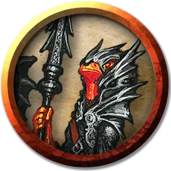

Огненный тритон колдун Имикса
Firenewt Warlock of Imix
Средний Гуманоид (Огненный тритон), нейтрально-злой

Класс Доспеха 10 (13 с доспехами мага)
Хиты 33 (6к8 + 6)
Скорость 30 футов
| мод | спас | ||
|---|---|---|---|
| СИЛ | 13 | +1 | +1 |
| ЛОВ | 11 | +0 | +0 |
| ТЕЛ | 12 | +1 | +1 |
| мод | спас | ||
|---|---|---|---|
| ИНТ | 9 | −1 | −1 |
| МДР | 11 | +0 | +0 |
| ХАР | 14 | +2 | +2 |
Иммунитет к урону огонь
Чувства тёмное зрение 120 футов (прозревает магическую тьму), пассивное Восприятие 10
Языки Драконий, Игнан
Опасность 1 (200 опыта)
Бонус мастерства +2
Среда обитания Горы, Подземье, Пустыня, Холмы
Особенности
Амфибия. Огненный тритон может дышать и на воздухе и в воде.
Врождённое колдовство. Врождённое колдовство огненного тритона основывается на Харизме. Он может неограниченно накладывать заклинание доспехи мага [mage armor] (только на себя), без материальных компонентов.
Использование заклинаний. . Огненный тритон – это заклинатель 3-го уровня. Его базовой характеристикой является Харизма (Сл спасброска от заклинаний 12, +4 к попаданию заклинаниями). Он восстанавливает потраченные ячейки заклинаний после завершения короткого или продолжительного отдыха. Он знает следующие заклинания колдуна:
• Заговоры (неограниченно): огненный снаряд [fire bolt], указание [guidance], свет [light], волшебная рука [mage hand], фокусы [prestidigitation].
• 1–2 уровень (2 ячейки 2-го уровня): огненные ладони [burning hands], пылающий шар [flaming sphere], адское возмездие [hellish rebuke], палящий луч [scorching ray].
Благословение Имикса. Когда огненный тритон уменьшает хиты врага до 0, он получает 5 временных хитов.
Действия
Моргенштерн. . Рукопашная атака оружием: +3 к попаданию, досягаемость 5 футов, одна цель. Попадание: 5 (1к8 + 1) колющего урона.
Описание
См. дополнительно статью: "Бестиарий: Огненные тритоны"